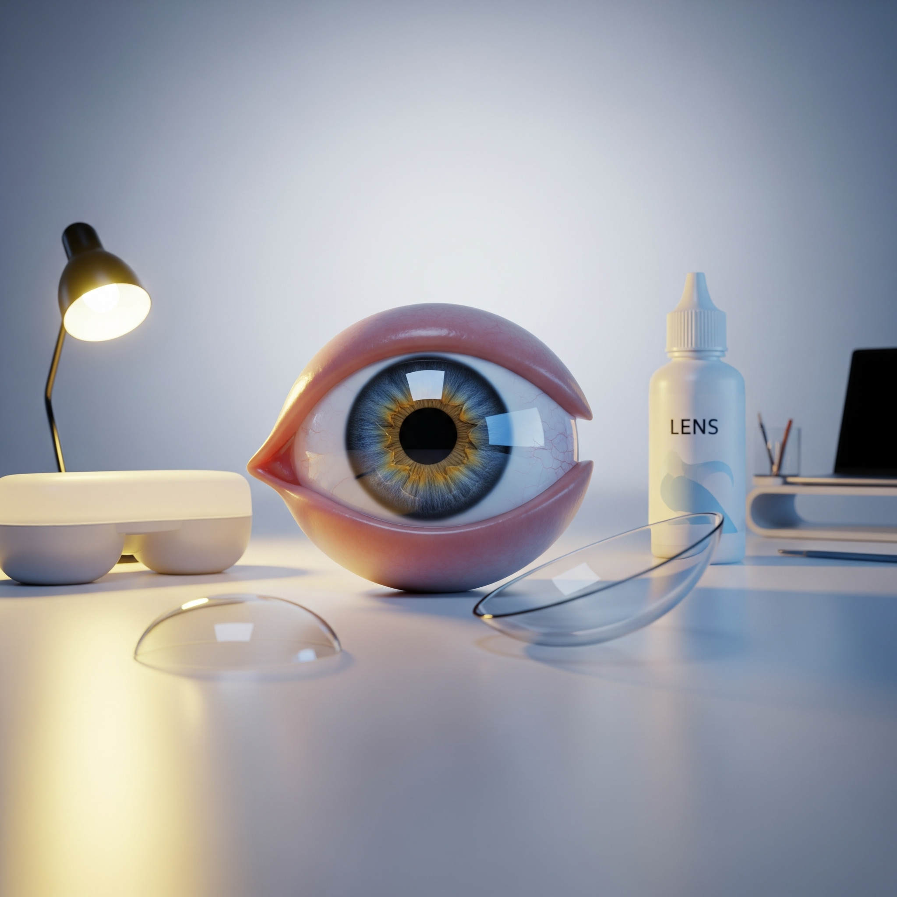

Introduction
Les lentilles de contact sont pratiques mais nécessitent une hygiène stricte pour préserver votre santé oculaire. Voici des conseils essentiels pour éviter infections, irritations et inconfort.
1. Lavez-vous toujours les mains
Avant de toucher vos lentilles, assurez-vous que vos mains sont propres et sèches.
👉 Prévenez la contamination et les infections oculaires.
2. Nettoyez et désinfectez vos lentilles
Utilisez une solution adaptée pour chaque type de lentille.
👉 Ne jamais utiliser d’eau du robinet pour nettoyer vos lentilles.
3. Respectez la durée de port
Ne dépassez jamais le temps recommandé par votre opticien.
👉 Vos yeux ont besoin de repos pour éviter la sécheresse et la fatigue.
4. Stockez correctement vos lentilles
Utilisez un étui propre et changez la solution régulièrement.
👉 Prévient le développement de bactéries et champignons.
5. Consultez régulièrement un spécialiste
Un contrôle régulier permet de détecter les problèmes à temps.
👉 Votre opticien ou ophtalmologiste est votre allié pour une vision saine.
Conclusion
Un entretien correct des lentilles de contact est essentiel pour préserver votre santé visuelle. Adoptez ces bonnes pratiques, consultez votre opticien régulièrement et profitez d’une vision confortable et sécurisée.
